大国崛起 · 国庆开发手记
国庆不只看装备：我用 GPT6.1 做的「红警风」游戏又升级了
陈成 · 2026年10月2日
昨天，我把用 GPT6.1 / Codex 一起开发的红警风格游戏发到了公众号。反响不错，也让我更想把这个项目继续做下去。
国庆假期，对军迷来说，装备的魅力不只是一个型号、一张照片。履带、炮塔、雷达、飞翼背后，是材料、制造、电子、航空航天这些工业能力。看到国产装备与科技进步，那份自豪感很自然。
我想把这份热爱做成一个自己的作品：既能看到熟悉的装备元素，又能真正建基地、调兵、侦察和对战。今天就少讲一点代码，多放一些图，看看《大国崛起》这次更新到了哪里。
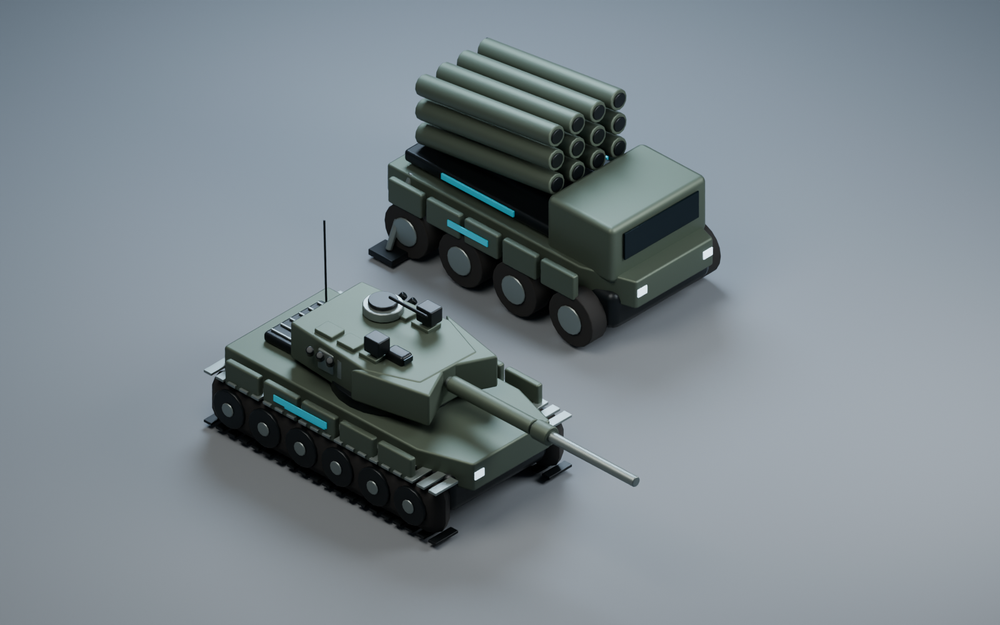
先回顾 昨天已经能玩什么
它已经不是只有画面的演示：五个虚构阵营，基地建设、供电、采矿、独立生产设施、战争迷雾，以及能打完一局的单机 AI。现代支援车辆、驱逐舰、航母和潜艇也已经进入了玩法。浏览器能运行，公开试玩包也支持离线打开。
那种熟悉的节奏还在：先保证经济，再选择科技路线，最后把你攒起来的部队送进战场。但这次我想继续往前走，让装备更有辨识度，也让战术选择更有意义。
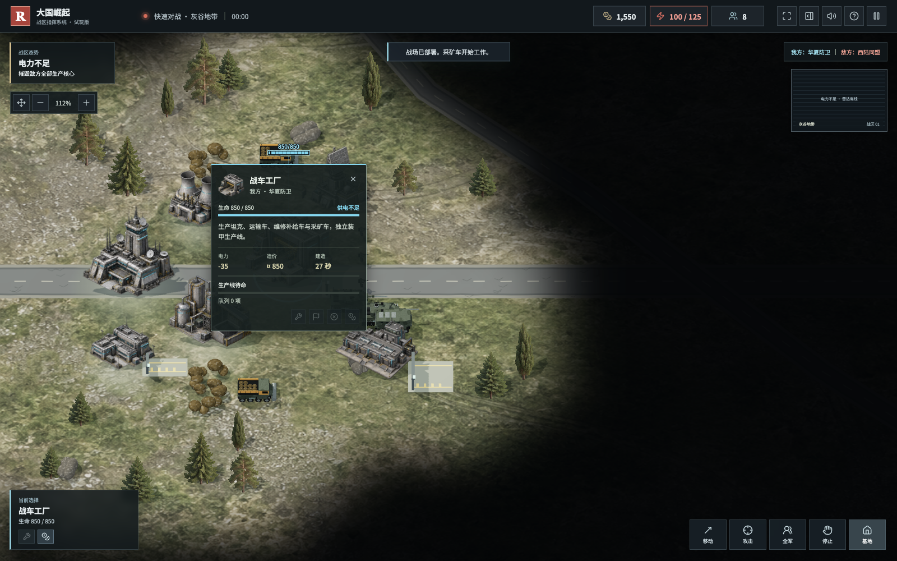
装备升级 从通用坦克走向不同原型
这一轮整理了 20 个现实装备原型名称和公开定位。中国方向有 99A、PHL-03、歼-20、红旗-17；其他方向也引入了 T-90MS、M1A2、K2、梅卡瓦 Mk4 等原型名称。阵营仍然是虚构设定，不是现实国家战争模拟。
目前五种坦克、五种火箭炮已经有独立的简化模型：炮塔轮廓、装甲模块、尾舱和发射舱开始有区别。航空、防空、运输和舰艇中的一些单位仍使用通用模型，不能因为换了名字，就说已经完成了那个型号的复刻。
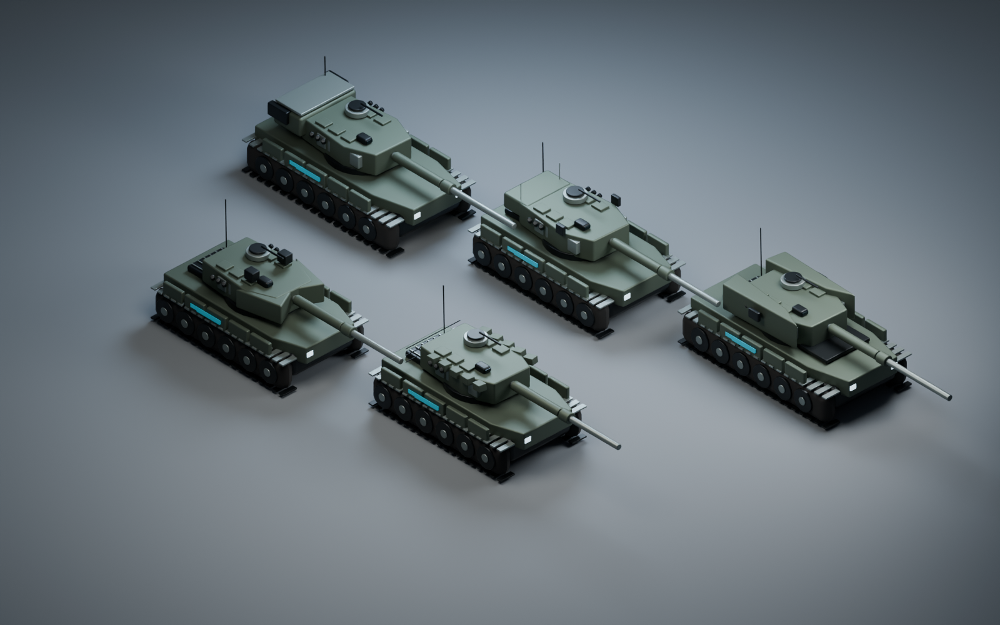
更重要的是，真实名称不是数值特权。游戏射程、装甲、造价、生产时间和伤害是为对战设计的抽象，不是现实性能评测。喜欢国产装备，和希望游戏公平、对手也有机会赢，并不矛盾。
战术升级 侦察 火力 反制与补给
比起再加一辆更大的坦克，我更希望让不同装备组成一套体系。现在这六种车辆已经能上场：巡飞弹发射车、电子干扰车、激光反无人机车、远程火箭炮、装甲运输车、维修补给车。
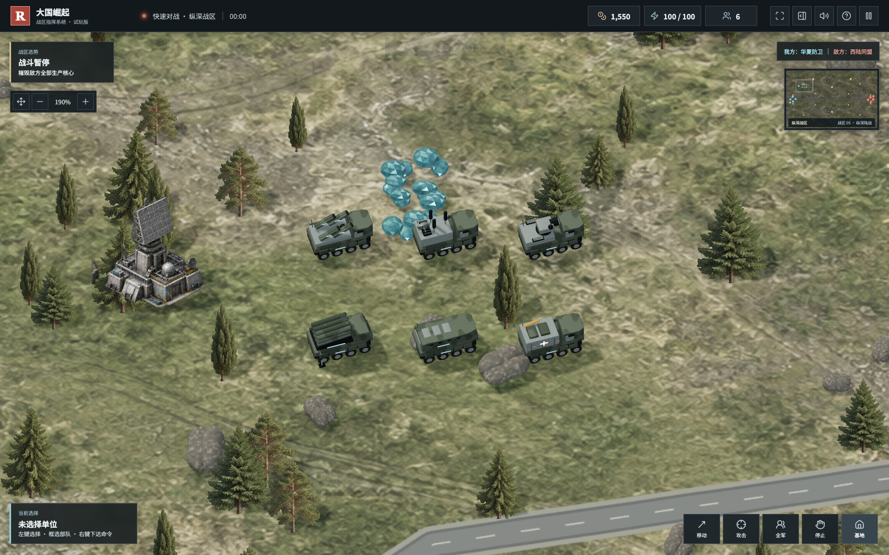
侦察帮你发现目标，远程火力需要前排保护，无人机要面对干扰与拦截，运输车负责把步兵送到合适的位置，补给决定高价值单位能否持续作战。于是，部队多不多之外，还要考虑编组有没有短板。
这一轮还补了装甲朝向：正面、侧面、背面命中不再完全一样。科幻地图中的掩体能帮助步兵承受部分直射火力，但不能挡住所有攻击。防空单位专心对空，低空无人机也不能随便挑战高空战机。双方都按同一套规则计算。
无人机与战斗反馈 更容易看清战场
无人机不再只是一个悬浮的小方块。四旋翼攻击机、隐形侦察飞翼、六旋翼母机，分别有了旋翼、承力臂、光电吊舱和不同轮廓。旋翼转动、飞行倾斜也开始体现在游戏里。它们是原创游戏设计，不对应某个已服役的完整型号。
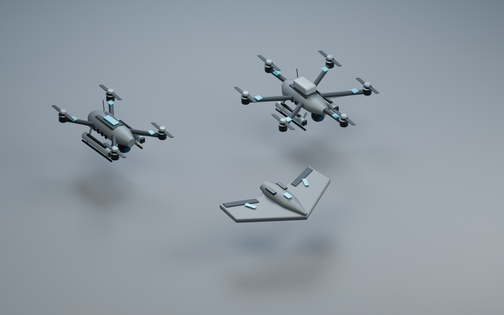
敌我识别也更明确了：我方蓝青色，敌方红色。血条、目标圈、机体识别带和雷达标记都参与区分，即使双方选同一阵营，也不用只凭坦克长相猜敌我。密集部队的血条排布和单位间距也做了优化。
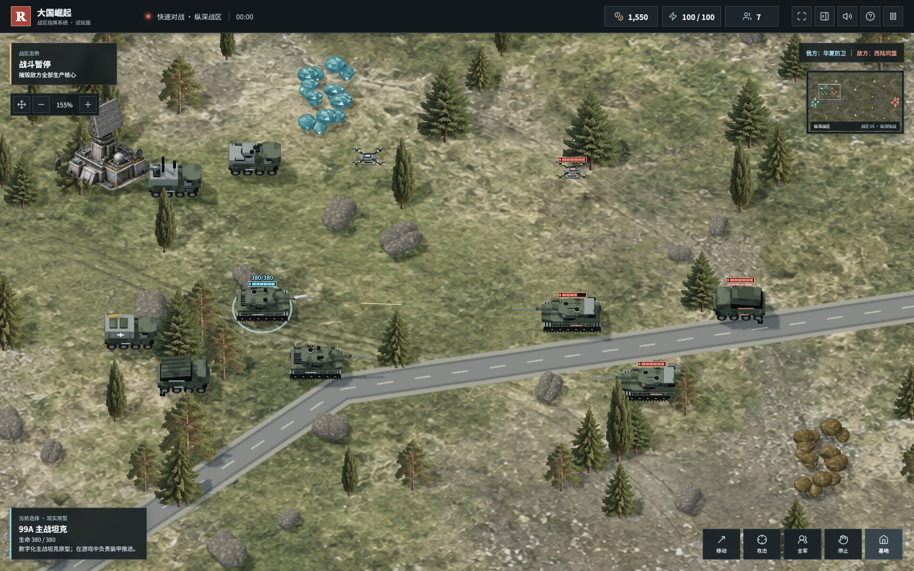
攻击反馈加入了炮口闪光、后坐、短曳光、命中碎屑、冲击波和导弹烟迹。目标是让你看得出谁开火、谁被命中，而不是把整张地图堆成看不清单位的特效秀。
桌面操作和地图 继续向可玩靠近
现在可以全屏，也能收起右侧指挥面板，把空间还给战场。地图支持拖拽和缩放，建筑点击信息、生产队列、出口和集结点，也开始连成一个完整的指挥流程。
兵营出步兵，工厂出战车；完成生产后，单位沿设施出口部署，再前往集结点。采矿车的提前避障和矿区分流也做了调整，减少贴到障碍物前才反复停顿的情况。大规模拥堵仍值得大家多试、多反馈。
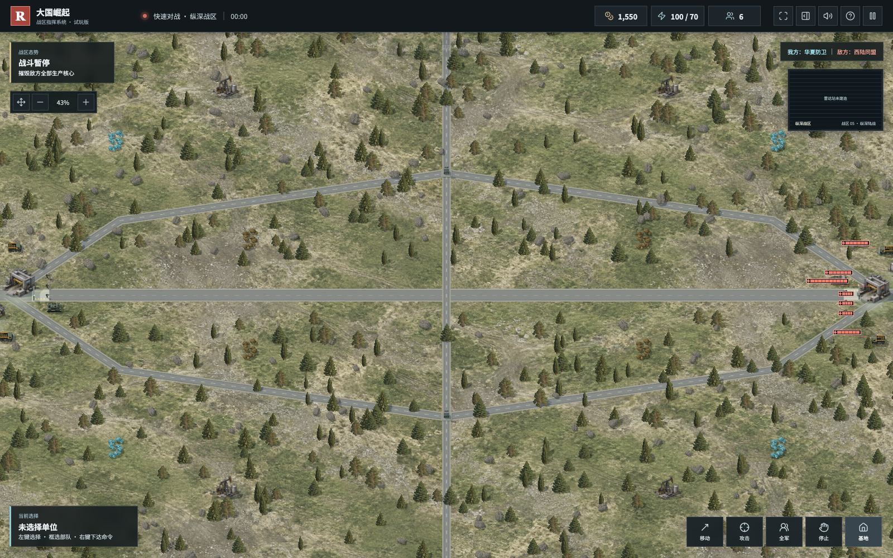
目前共有六张地图。除了陆地战区，还有 3520 × 2240 的大型海图。海上已经能指挥驱逐舰、航母和潜艇，但现有舰艇是通用游戏模型，还不能当成 052D 或某艘真实航母的复刻。
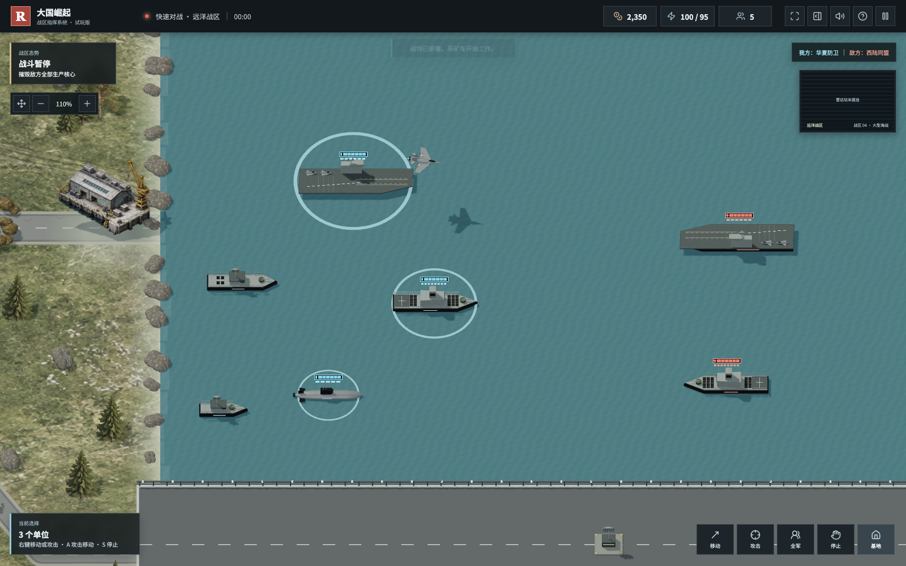
后续会优先围绕电脑端继续优化镜头、编队、模型与性能，不再把开发精力主要花在手机端布局上。
科幻战区 子午环阵已经可以玩
军迷的兴趣常常也会延伸到航空航天和未来科技。这次加入了原创地图「子午环阵」：月面风格地表、三维模块化基地、光伏掩体、测控设施和通信扰动。它不是南天门计划的官方联动，也不代表现实项目已经具备游戏里的能力。
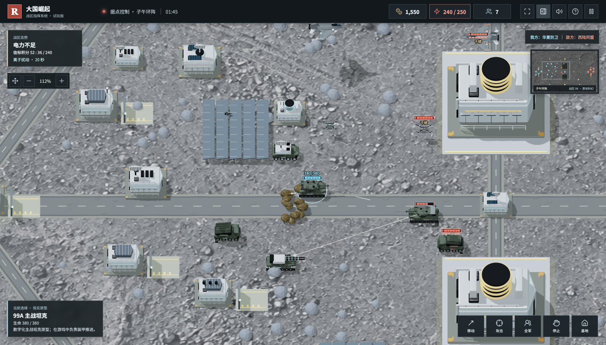
这里不只有换皮。三处信标可以争夺，既关系到供电，也关系到据点积分；周期性的离子扰动会影响部分空中与制导单位，友方中继车和已控制信标能提供一定范围的保护。天气和胜利条件对双方相同。
三个新单位也已经能生产：凌霄电磁炮车有部署时间、最小射程和弹药限制；云隼无人制空机专注对空，需要补弹；子午通信中继车不直接开火，却能保护编组的通信。未来装备越强，就越需要清楚的代价和反制。
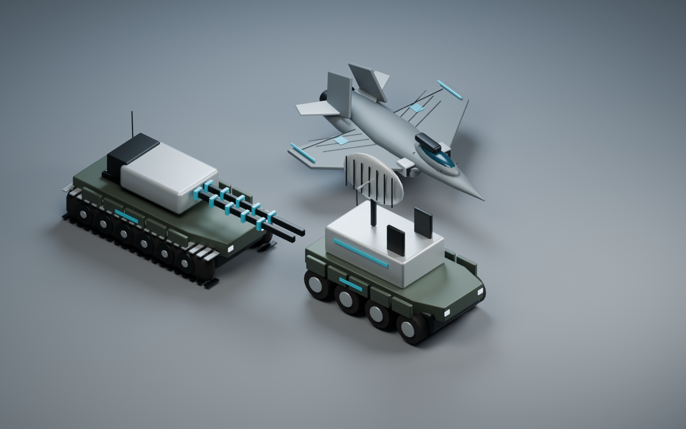
现实的子午工程是空间天气监测科研工程；游戏借用了空间天气的灵感，不把科研工程写成武器计划。南天门计划则是航空主题科幻 IP。这些边界会保留，模型和设定也会继续以原创为主。
接下来 东风 052D 蜂群与月球基地
下面这些是路线图，不是今天已经交付的功能。我很想做，但会先确定用途、反制和平衡，再逐步增加模型与玩法。
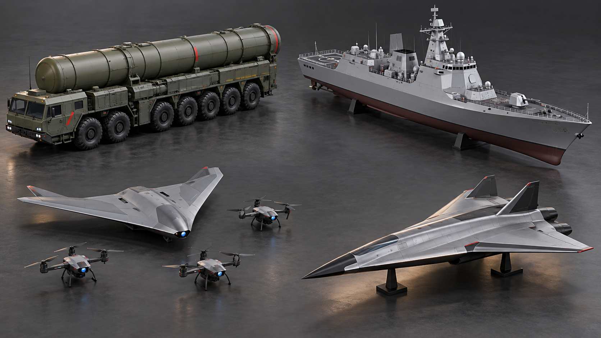
东风系列与战略武器
计划引入东风系列外形与命名元素，以战略威慑和有限次数的远程打击作为游戏方向。具体型号还要挑选公开资料，不能把不同型号当成同一种武器。
核武器也会作为后续可选规则研究：默认常规对局可以关闭，开局双方知道规则；如果加入，就必须有高成本、长准备时间、预警和制约机制。它不应该成为随手点一下就结束整局的按钮，更不是现实核武器使用或制造模拟。
052D与海空协同
现有通用驱逐舰之后，计划增加参考 052D 公开外形的独立模型，细化舰桥、雷达阵面、甲板与垂直发射区的视觉辨识。玩法上研究区域防空、护航和反潜分工，让航母、驱逐舰和水下单位互相需要，而不是只比舰艇血量。
蜂群无人机与超音速飞行器
无人系统准备往协同方向扩展：侦察、诱饵、中继与攻击各有任务，同时让电子干扰、激光拦截和补给成为反制环节。高速飞行器则研究短窗口出击、转场和补给代价。超音速与高超音速不是同一个概念，后续会分别选定原型，不把速度写成万能优势。
更完整的月球基地
子午环阵只是第一步。未来想把资源处理、能源、通信、月面运输和空天单位连成更完整的科技路线，再研究低重力表现、空间天气和基地扩展。但会先做好眼前能玩的内容，不靠一张概念图就宣布功能完成。
联机怎么做 先局域网再公网
目前仍是单机，联网功能尚未实现。计划先做双人局域网，把房间、准备、同步和断线恢复跑通，再把同一套服务端部署到公网。
方案是 Node.js + WebSocket 的权威服务端：浏览器发送移动、攻击、生产这些指令，服务器校验资源、归属与科技条件，统一计算战斗，再把各玩家有权看到的状态发回浏览器。迷雾里的敌方信息不应直接发给客户端，客户端也不能自己宣布金币增加或伤害生效。
玩家 A 浏览器 ─┐
├─ WebSocket ─ 权威游戏服务器
玩家 B 浏览器 ─┘ │
指令校验 → 统一模拟 → 按迷雾过滤
│
状态同步 → 浏览器平滑渲染联机架构规划｜局域网先验证同一套服务端，公网阶段再增加 HTTPS / WSS、房间认证和运维保障。
单机本身使用 JavaScript、Vite、Three.js 与 pathfinding，模型由 Blender 生成，地图贴图部分采用 AI 辅助制作。规则、画面、操作、音频与素材相对分开，方便以后替换模型、补单元测试和接入服务器。联机不是简单把两台电脑的点击广播过去。
一起玩 一起把它做得更好
这个项目不会因为发了一篇文章就停下。我会继续更新，也希望它从「我用 AI 做的游戏」，慢慢变成「我们一起维护的游戏」。
军迷朋友欢迎帮我挑装备轮廓和公开资料；RTS 玩家欢迎多打几局，告诉我哪个兵种没有存在感、哪张地图容易一边倒；会 Blender、Three.js、音效、寻路或网络同步的朋友，也欢迎通过 Pull Request 一起共建。
发现问题可以在 Issues 里附上地图、阵营、复现步骤和截图；提建议也欢迎说明你期待的玩法，而不只是更大的伤害数字。模型和音频贡献请注明来源与授权，不使用来路不明的商业游戏素材。
GitHub 开源仓库
https://github.com/chencheng666/great-powers-rts
试玩下载与版本更新
https://github.com/chencheng666/great-powers-rts/releases
提交问题和建议
https://github.com/chencheng666/great-powers-rts/issues
本文展示的是国庆 v0.2.0 版，试玩请下载 Release 页的 Great-Powers-RTS-v0.2.0.zip，具体内容以对应版本说明为准。游戏是原创、非官方红警风格 RTS，不是《红色警戒》的官方续作，也不以现实军事实力排行为目标。
国庆的这份热爱，除了看装备，也可以是亲手做一个作品。祝大家假期快乐，欢迎来玩，欢迎来提意见，我们一起把它做得更好。
公开资料与素材说明
游戏截图来自本地桌面开发版，其中部分通过固定游戏内展示场景采集并展开迷雾，方便观察模型与编组，不作为自然对局战绩。四张模型特写使用现有 Blender 源模型离线渲染；两张未来愿景图由 AI 辅助生成，并已就地标注。
子午工程与空间天气科研介绍 中国科学院国家空间科学中心
https://www.nssc.cas.cn/jgsz2015/ztjg/gjkjtqkxzx/
南天门计划航空科幻 IP 介绍 上海市科学技术委员会
https://stcsm.sh.gov.cn/xwzx/mtjj/20240819/44882ec4bcb04a958c949a4d3dfe9d83.html